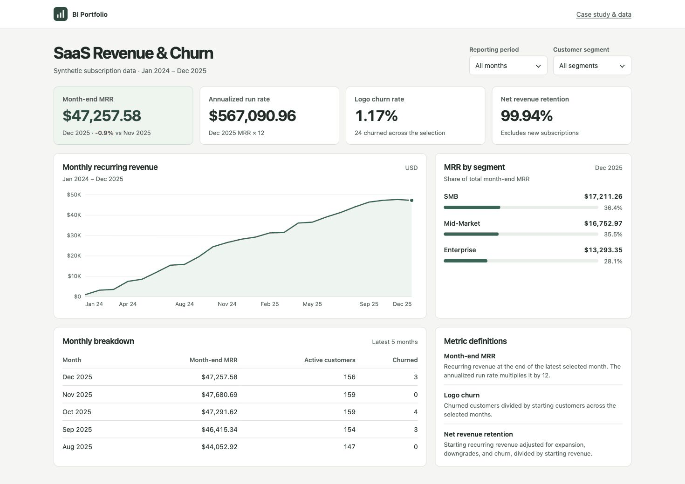
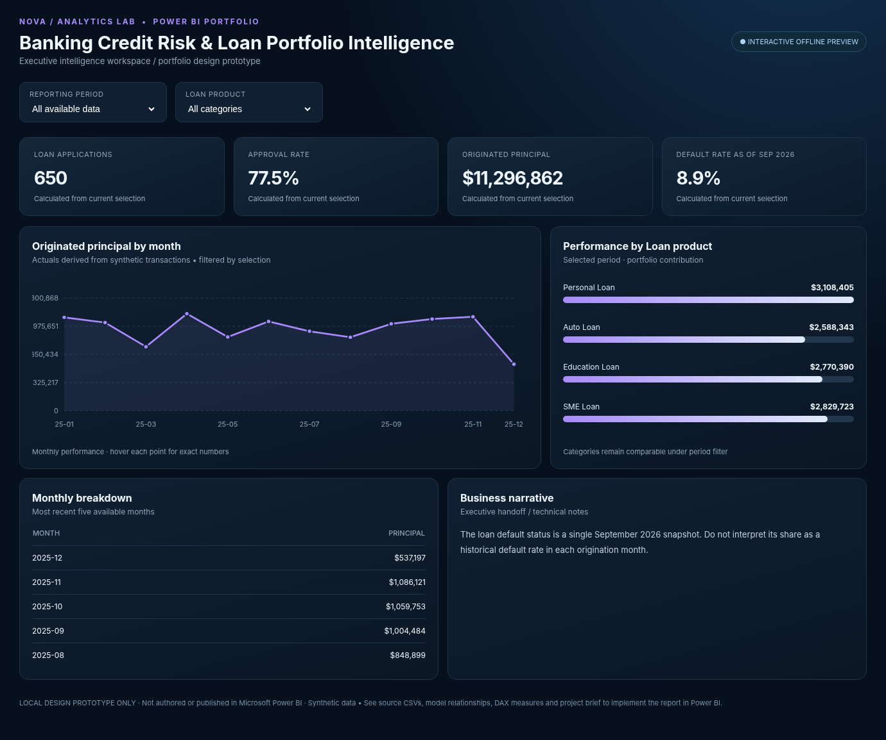
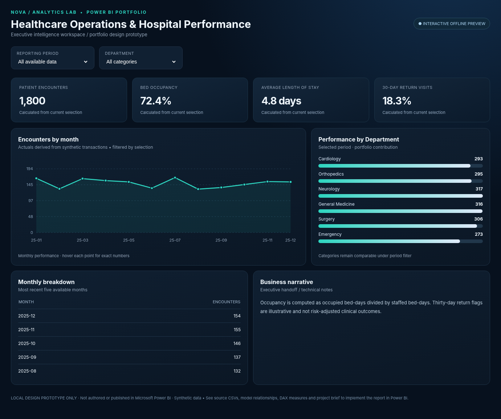
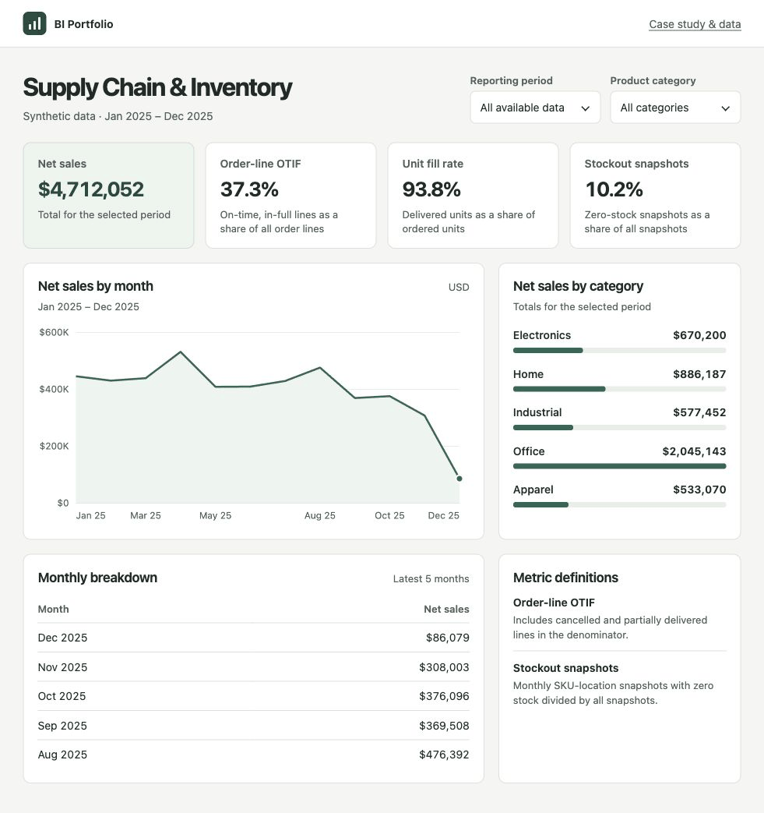

SaaS Revenue & Churn
Which customer segments drive recurring revenue and churn?

Sumit Gole · Four interactive case studies with synthetic data
Which customer segments drive recurring revenue and churn?

How do loan approval rates and the default snapshot vary by product?

How do patient volume and bed occupancy compare across departments?

Which product categories have lower fulfillment rates and more stockouts?
